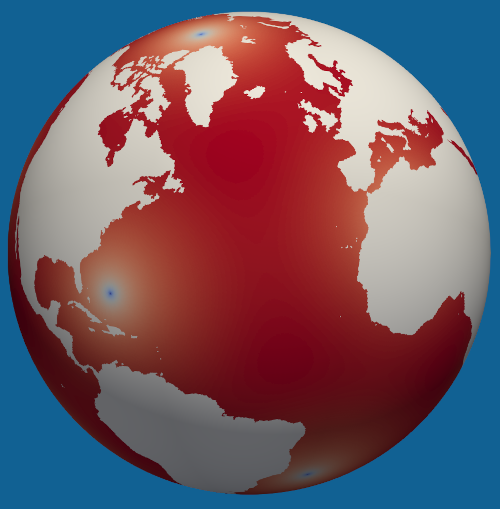

Culling MPAS Base Meshes to Land/River or Ocean/Sea Ice Regions
The e3sm/init component includes a workflow for culling MPAS base meshes to
produce meshes for specific regions, such as land/river or ocean/sea-ice
domains. This process uses remapped topography and mask information to remove
cells not belonging to the desired region, ensuring that the resulting meshes
are contiguous and scientifically meaningful for E3SM simulations.
Culling Workflow Overview
The culling workflow is composed of several modular steps, each responsible for a specific part of the process:
Mask Generation: The
polaris.tasks.e3sm.init.topo.cull.CullMaskStepcreates masks for land, ocean (with and without ice-shelf cavities), and Antarctic land ice. This step uses critical transects, flood-filling, and land-locked cell detection to ensure the masks are physically consistent and contiguous, and it checks the resulting masks against the invariants described in Mask Invariants below.Mesh Culling: The
polaris.tasks.e3sm.init.topo.cull.CullMeshStepuses the generated masks to cull the MPAS base mesh, producing separate meshes for land, ocean/sea-ice, and ocean without ice-shelf cavities. It also generates mapping files between the culled and base meshes, and graph files for the ocean meshes.Task Orchestration: The
polaris.tasks.e3sm.init.topo.cull.CullTopoTaskorchestrates these steps for each supported MPAS base mesh.
Step Dependencies
The typical dependency chain is:
RemapTopoStep(remaps topography to MPAS mesh, unsmoothed)CullMaskStep(creates masks for culling)CullMeshStep(culls the mesh to each region)
Configuration Options
The culling steps are configured through the [cull_mesh] section in the configuration file. Key options include:
cpus_per_taskandmin_cpus_per_task: Number of cores to use for culling.include_critical_transects: Whether to use critical land and ocean transects from geometric_features to enforce connectivity.sea_ice_latitude_threshold: Latitude poleward of which transects are widened and sea ice is taken to form, so the B-grid vertex criterion applies.land_ice_max_latitude: Latitude, south of which critical land transects are considered to belong to land ice.land_ice_min_fraction: Minimum land-ice fraction for flood-filling the land-ice mask.min_dc_edge_abs_ratio: The minimum ratio of the shortestdcEdgein the culled ocean/sea-ice domain to the finest ocean background cell width anywhere in it (unified meshes only). This is the CFL guard.min_dc_edge_ratioandmax_dc_edge_ratio: The allowed range ofdcEdgerelative to the local ocean background cell width (unified meshes only). This is the leak guard.
See cull.cfg for the full set of options.
dcEdge Diagnostic for Unified Meshes
For unified meshes, land/river regions are typically meshed at finer
resolution than the CFL-limited ocean/sea-ice regions, so resolution
“leaking” across the coastline into the culled ocean mesh can destabilize
forward runs. After all masks are written, CullMaskStep calls
polaris.tasks.e3sm.init.topo.cull.dc_edge_diagnostics.check_ocean_dc_edge(),
which compares dcEdge on base-mesh edges interior to the ocean cull mask
against the ocean background cell width sampled from the mesh’s sizing
field, writes ocean_dc_edge_diagnostics.nc, and raises an error listing
the worst violation clusters if any ratio falls outside
[min_dc_edge_ratio, max_dc_edge_ratio]. For simple base meshes there is
no sizing field and the check is skipped. The motivation, mechanisms and
threshold justification are documented in the unified_mesh_cull_leak
design doc (see Design Documents).
There are two guards, and they answer different questions.
min_dc_edge_abs_ratio compares the shortest edge in the domain against
the finest ocean background anywhere in it: that is what sets the forward
run’s time step, and since a mesh is already sized for its own finest
intended resolution, an edge that is short only relative to a coarse local
background costs nothing. min_dc_edge_ratio compares each edge against
its local background, which is what detects a leak.
The thresholds come from cull.cfg, and a unified mesh can override them in
its own polaris/mesh/spherical/unified/<mesh_name>.cfg, which is read after
cull.cfg when the cull config is assembled. No mesh currently needs to:
u.oi6to18.lr6to10 once overrode the ratio floor for a single edge, and that
override went away when the CFL guard was separated out.
A failure here does not by itself mean resolution has leaked. On
u.oi6to18.lr6to10 it does not: the sizing field prescribes the full ocean
background at every edge in the low tail, and the short edges are the seams
of pentagon-heptagon dislocation pairs in JIGSAW’s hexagonal packing. That
distribution is the same on every unified mesh, so the minimum falls as the
edge count rises – 0.799 at 21 thousand ocean edges, 0.664 at 1.4 million,
0.643 at 12 million. When investigating a failure, first compare dcEdge
against cellWidth rather than ocean_background_cell_width: if the two
ratios agree, the sizing field is not the problem. The
unified_mesh_dc_edge_noise design doc records the diagnosis and the two
mitigations, the coastline-transition shape in the sizing field and
JIGSAW’s centroidal-Voronoi optimization kernel.
The Antarctic land-ice ownership mask also includes southern cells that have already been removed from the open-ocean cull mask, so the cull workflow remains consistent with the remapped topography masks.
Mask Invariants
The three cull masks and the land-ice mask together describe how the globe is
divided between the components, and CullMaskStep guarantees the following,
for every value of antarctic_boundary_convention:
The ocean without ice-shelf cavities is a subset of the ocean. Never the reverse.
The land is exactly the complement of the ocean without cavities, so every cell on the globe is owned by exactly one of the two.
The land-ice mask is zero at every cell the ocean without cavities retains. Equivalently, the ice-shelf cavity cells of the ocean mesh are exactly the cells the ocean retains and the ocean without cavities does not.
Critical land blockages and critical ocean passages are applied identically to the ocean and to the ocean without cavities, and no cell of a critical ocean passage is culled from the ocean.
The two ocean domains differ only by ice-shelf cavities: every cell in the ocean but not in the ocean without cavities carries land ice.
Under
calving_frontno cell of the ocean carries land ice, since that convention ends the ocean at the calving front.Every cell of either ocean domain has at least two active edges; every cell of the ocean without cavities poleward of
sea_ice_latitude_thresholdhas at least one active vertex; and every cell of that domain can move sea ice to the part of it equatorward of the threshold, where ice melts.
Invariants 1, 5 and 6 together mean the two ocean domains are identical under
calving_front, so the ocean and the land partition the base mesh. That is a
consequence of the requirements rather than a separate assertion.
Invariant 4 is why CullMaskStep._apply_critical_transects is shared between
refine_ocean_cull_mask and the ocean-without-cavities mask: removing the
land ice from the ocean mask would otherwise undo a critical passage that had
kept an ice-covered cell in the ocean. In the without-cavities pass the
passage override is restricted to cells the ocean itself retains, which is
what makes invariant 1 hold by construction.
Invariant 3 is the decision that critical transects outrank the ice masks. A
cell that a passage forces into the ocean is treated as open water rather than
as an ice-shelf cavity. That is what makes calving_front genuinely
cavity-free, and under grounding_line and bedrock_zero it keeps the
sea-ice mesh from owning a cell that the ocean mesh models as a cavity.
The land-locked-cell check is deliberately asymmetric between the two ocean
domains, because the two models place different demands on the mesh.
MPAS-Ocean and Omega are C-grids with velocities at edges, so an ocean cell
needs at least two active edges: a way in and a way out. MPAS-Seaice is a
B-grid with velocities at vertices, so a sea-ice cell needs at least one
active vertex, or ice drifting into it has no velocity point to leave by.
The vertex criterion is the stronger of the two and applies only to the
ocean without cavities, and only poleward of sea_ice_latitude_threshold,
where sea ice can form. The two domains are refined together by
polaris.tasks.e3sm.init.topo.cull.land_locked.remove_land_locked_cells(),
alternating until neither changes, because removing a cell from one can
strand a cell in the other. The requirements and the algorithm are set out
in the land_locked_cells design doc (see Design Documents).
After all masks are written, CullMaskStep checks them. Invariants 1, 2, 3,
5 and 6 are the province of
polaris.tasks.e3sm.init.topo.cull.consistency.check_cull_mask_consistency(),
which needs only the masks; invariant 7 belongs to
polaris.tasks.e3sm.init.topo.cull.consistency.check_land_locked_criteria(),
which needs the mesh as well; and the passage half of invariant 4 is checked
by
polaris.tasks.e3sm.init.topo.cull.consistency.check_critical_passages(),
which names the transect responsible so it can be fixed in
geometric_features. Each raises a ValueError listing the offending cell
indices. These are hard failures because a violation means the culled meshes
handed downstream are wrong in a way that is hard to notice later.
Workflow
Mask Generation: The
CullMaskStepcreates masks for ocean, ocean without cavities, land, and Antarctic land ice. It uses critical transects, flood-filling from seed points, and land-locked cell detection to ensure the masks are contiguous and scientifically meaningful. The ocean and the ocean without cavities each get the same critical land blockages and critical ocean passages; the land is then the complement of the ocean without cavities.Mesh Culling: The
CullMeshStepuses the generated masks to cull the MPAS base mesh, producing separate meshes for land, ocean/sea-ice, and ocean without ice-shelf cavities. It also generates mapping files and graph files as needed.Output: The final culled meshes and masks are saved as NetCDF files for each region.
Supported Mesh Types
add_cull_topo_tasks registers tasks for all supported base meshes,
including both simple (quasi-uniform and icosahedral) base meshes and
named unified meshes (see Unified base-mesh tasks). The set
of mesh names is the union of get_base_mesh_step_names() and
UNIFIED_MESH_NAMES.
Example Usage
To get the shared cull steps for a specific mesh:
from polaris.tasks.e3sm.init.topo.cull import get_cull_topo_steps
steps, config = get_cull_topo_steps(
mesh_name='u.oi30.lr10',
include_viz=False,
)
To add the full culling workflow as a task for each supported mesh:
from polaris.tasks.e3sm.init.topo.cull import add_cull_topo_tasks
add_cull_topo_tasks(component)
Example: Culled Ocean Mesh
Below is an example of a 30-km ocean mesh from which land has been culled:
{kind=link}

The culled mesh is contiguous and ocean flow has been ensured through the use of ocean critical transects (e.g. narrow straits) or blocked through the use of land critical transects (e.g. narrow peninsulas or isthmuses).
Customizing Mask Generation
Developers may wish to customize how masks are generated. To implement a custom
approach for generating masks, create a subclass of
polaris.tasks.e3sm.init.topo.cull.CullMaskStep and override methods
such as define_critical_land_transects, define_critical_ocean_transects,
refine_ocean_cull_mask, or refine_land_cull_mask. These methods receive the
geometric features, base mesh, topography, and current masks, and should return
updated masks as xarray.DataArray objects.
Example:
from polaris.tasks.e3sm.init.topo.cull import CullMaskStep
class MyCustomCullMaskStep(CullMaskStep):
def refine_ocean_cull_mask(self, ds_base_mesh, ds_topo, cull_mask):
# Custom logic for refining the ocean cull mask
# e.g., add or remove cells based on scientific criteria
return cull_mask
Note that refine_ocean_cull_mask alters only the ocean domain directly. Its
result still reaches the ocean without ice-shelf cavities, because that mask
starts from the ocean cull mask, but the critical transects, land-locked-cell
check and flood fill are re-run there independently.
refine_land_cull_mask receives the complement of the ocean without cavities
and returns it unaltered in the base class, so overriding it means departing
from invariant 2 above. A subclass that does so must also override
CullMaskStep._check_mask_consistency, which would otherwise reject the
resulting masks.
You can then use your custom step in place of the default CullMaskStep when
constructing your workflow.
Integration
To use your custom step, simply instantiate it in your workflow or override the step creation logic in your task or workflow setup.
For more details, refer to the docstrings and source code of
polaris.tasks.e3sm.init.topo.cull.CullMaskStep.